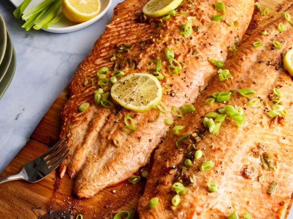

Step 1
Gather all ingredients.
Step 2
Soak cedar planks for at least 1 hour in warm water. Soak longer if you have time.
Step 3
Stir soy sauce, vegetable oil, rice vinegar, sesame oil, green onions, ginger, and garlic together in a shallow dish.
Step 4
Place salmon fillets in soy mixture and turn to coat. Cover and marinate for at least 15 minutes, or up to 1 hour refrigerated.
Step 5
Preheat an outdoor grill for medium heat. Place planks on the grill grate. Heat planks until they start to smoke and crackle just a little.
Step 6
Remove salmon from marinade and place on planks; discard marinade.
Step 7
Close grill cover. Grill salmon until it flakes easily with a fork, about 20 minutes; salmon will continue to cook after you remove it from the grill.

All images supported by Dotdash Meredith Food Studios
This cedar plank salmon is a dish my brother prepared for me in Seattle. The salmon is moist, smoky, and by far the best I've ever eaten. I like to serve it with Asian-style rice and asparagus.